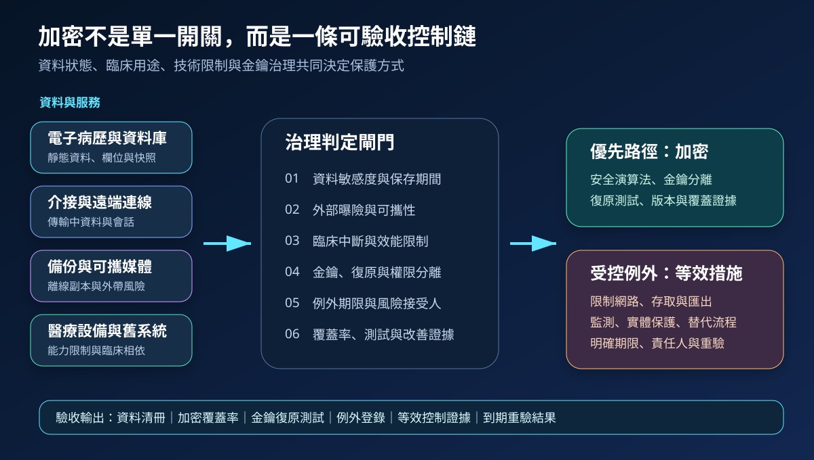
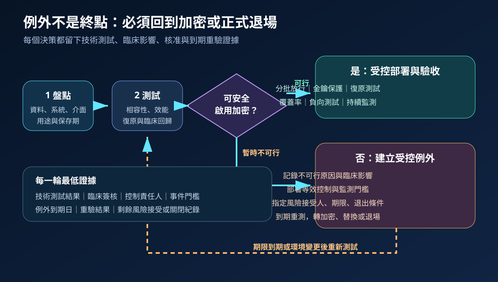
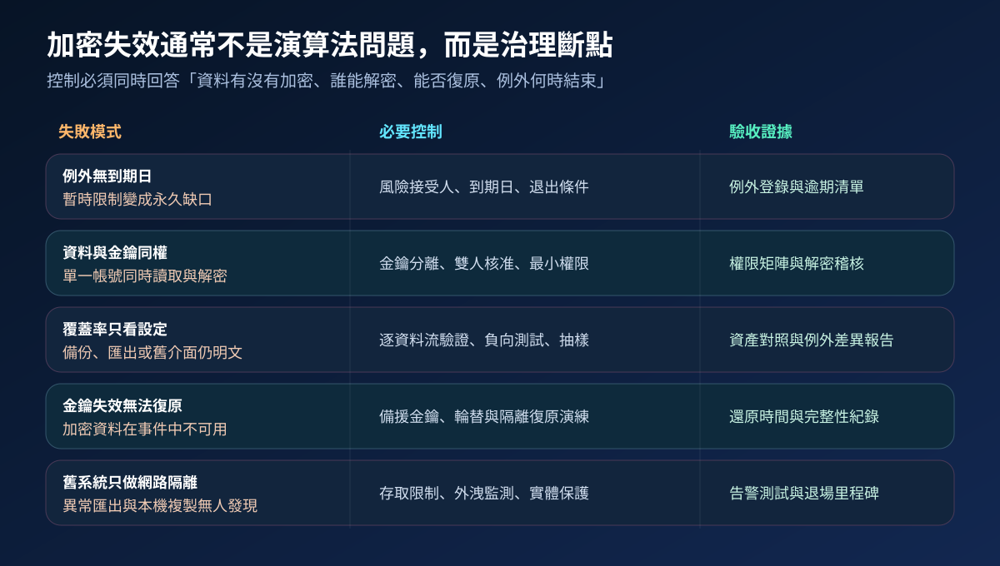

醫療資安國際觀察 · 2026-11-27
醫療加密例外如何避免變成永久缺口：從風險判定到等效控制驗收
作者：Dr. William｜醫療資訊與資安治理實務工作者
醫療資料無法立即加密，不代表可以只留一句「系統不支援」；治理重點是證明限制確實存在、替代控制能降低風險、臨床服務仍可復原，並設定明確期限回到加密、替換或退場。
名詞解釋：加密、金鑰治理與等效控制
靜態資料加密保護資料庫、備份、可攜媒體與裝置儲存內容；傳輸加密保護介接、遠端連線與服務之間的資料流；金鑰治理涵蓋產生、保管、授權、輪替、撤銷與復原。等效控制是在特定加密措施暫時不可行時，依相同風險目標配置隔離、存取限制、監測、實體保護或資料最小化，不能被視為永久豁免。
國際現況與適用邊界
HHS OCR 於 2026 年 10 月的資安月資料重申，受保護健康資訊的加密需依風險分析判定是否合理且適當；若特定措施不適用，仍需記錄判定理由並採取合理且適當的替代措施。NIST SP 800-66 Rev.2 提供相近的風險導向實作方法，要求把控制選擇、替代措施與文件證據納入安全管理。NIST SP 800-111 則說明終端與儲存裝置加密的規劃、技術選擇及管理考量。
法域與適用原則：HHS OCR 資料與 HIPAA Security Rule 實作說明適用於美國受規範實體及其業務夥伴；NIST 文件屬技術與風險管理指引。這些要求不構成台灣醫療機構的直接法定義務。台灣院所應依本地個資、醫療、資通安全規範、契約責任與臨床風險決定控制及核准層級。
對台灣醫療機構的影響
醫院常見限制包括舊式醫療設備不支援現代加密、介接效能不足、廠商更新受限、加密後無法由既有備援流程復原，或緊急照護需保留離線存取。若只以設備年限或效能疑慮作為例外，容易讓明文備份、匯出檔、維運通道與本機暫存長期存在。治理應把每個例外連回資料、臨床服務、系統負責人、供應商路線圖與退場日期。
規劃：先定義保護目標與驗收條件
規劃範圍應涵蓋資料所在位置、流向、使用角色、保存期間、可攜性、外部曝險與中斷容忍度。每項加密控制需指定演算法與協定基線、金鑰權責、復原方式、覆蓋率、例外核准人及重驗頻率。驗收指標可包含受保護資產比例、明文資料流數量、金鑰輪替成功率、隔離環境復原時間、例外逾期數、未授權解密告警與退場里程碑完成率。
實作：六階段管理加密與例外
- 建立清冊：盤點病歷、影像、介接、備份、端點、設備與匯出流程。
- 分級風險：依敏感度、外部曝險、可攜性、臨床影響與保存期排序。
- 技術測試：驗證相容性、效能、金鑰復原、臨床回歸及失效行為。
- 受控部署：可行者分批啟用，保留負向測試、復原與覆蓋證據。
- 治理例外：不可行者記錄限制，配置等效控制、責任人、期限與事件門檻。
- 到期重驗：依技術更新、供應商版本、事件或期限重新測試，轉為加密、替換或退場。

風險：加密可能存在，但保護仍然失效
只檢查設定畫面會漏掉未加密的匯出、快照與舊介面；讓資料管理者同時掌握金鑰會削弱權限分離；未演練金鑰復原可能在勒索事件或設備故障時造成資料不可用；只做網路隔離而缺少匯出監測，仍無法發現內部複製。控制設計必須同時維持機密性、可用性與可追溯性，並把臨床降級程序納入測試。

可執行清單
- 是否建立靜態、傳輸中、備份、匯出與本機暫存的資料流清冊？
- 每項加密措施是否完成相容性、效能、失效與臨床回歸測試？
- 資料權限與金鑰管理權限是否分離，並保留解密稽核？
- 是否在隔離環境演練金鑰復原、輪替與受控還原？
- 每項例外是否記錄不可行原因、等效控制、責任人與到期日？
- 是否監測明文匯出、異常複製、未授權解密及例外逾期？
- 例外到期後是否以證據決定加密、替換、退場或重新核准？
來源
- HHS OCR｜Cybersecurity Awareness Month 2026（發布：2026-10；頁面審查：2026-11-03；查閱：2026-11-27）
- NIST｜SP 800-66 Rev.2, Implementing the HIPAA Security Rule（發布：2024-02-14；查閱：2026-11-27）
- NIST｜SP 800-111, Guide to Storage Encryption Technologies for End User Devices（發布：2007-11-01；查閱：2026-11-27）
內容說明
本文依健康台灣深耕計畫相關治理內容整理，並參考 HHS 與 NIST 官方資料，說明醫療資料加密、金鑰治理、例外判定及等效控制的驗收方法；不把美國法規實作說明或 NIST 技術指引視為台灣醫療機構的直接法定義務，也不取代主管機關要求、院內風險接受程序或臨床安全驗證。